Suspension: System Modeling
Key MATLAB commands used in this tutorial are: ss , step
Contents
Physical setup

Designing an automotive suspension system is an interesting and challenging control problem. When the suspension system is designed, a 1/4 model (one of the four wheels) is used to simplify the problem to a 1D multiple spring-damper system. A diagram of this system is shown below. This model is for an active suspension system where an actuator is included that is able to generate the control force U to control the motion of the bus body.

System parameters
(M1) 1/4 bus body mass 2500 kg
(M2) suspension mass 320 kg
(K1) spring constant of suspension system 80,000 N/m
(K2) spring constant of wheel and tire 500,000 N/m
(b1) damping constant of suspension system 350 N.s/m
(b2) damping constant of wheel and tire 15,020 N.s/m
(U) control force
Equations of motion
From the picture above and Newton's law, we can obtain the dynamic equations as the following:
(1)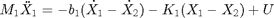
(2)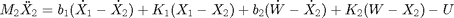
Transfer function models
Assume that all of the initial conditions are zero, so that these equations represent the situation where the vehicle wheel goes up a bump. The dynamic equations above can be expressed in the form of transfer functions by taking the Laplace Transform. The specific derivation from the above equations to the transfer functions G1(s) and G2(s) is shown below where each transfer function has an output of, X1-X2, and inputs of U and W, respectively.
(3)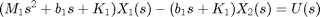
(4)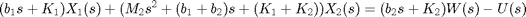
(5)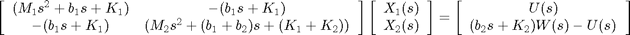
(6)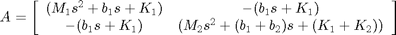
(7)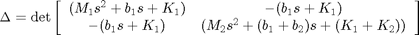
or
(8)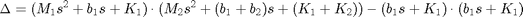
Find the inverse of matrix A and then multiply with inputs U(s)and W(s) on the righthand side as follows:
(9)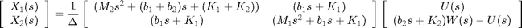
(10)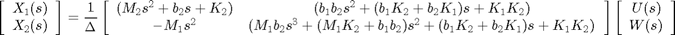
When we want to consider the control input U(s) only, we set W(s) = 0. Thus we get the transfer function G1(s) as in the following:
(11)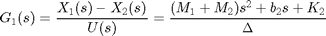
When we want to consider the disturbance input W(s) only, we set U(s) = 0. Thus we get the transfer function G2(s) as in the following:
(12)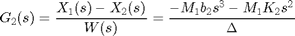
Entering equations in MATLAB
We can generate the above transfer function models in MATLAB by entering the following commands in the MATLAB command window.
M1 = 2500;
M2 = 320;
K1 = 80000;
K2 = 500000;
b1 = 350;
b2 = 15020;
s = tf('s');
G1 = ((M1+M2)*s^2+b2*s+K2)/((M1*s^2+b1*s+K1)*(M2*s^2+(b1+b2)*s+(K1+K2))-(b1*s+K1)*(b1*s+K1));
G2 = (-M1*b2*s^3-M1*K2*s^2)/((M1*s^2+b1*s+K1)*(M2*s^2+(b1+b2)*s+(K1+K2))-(b1*s+K1)*(b1*s+K1));